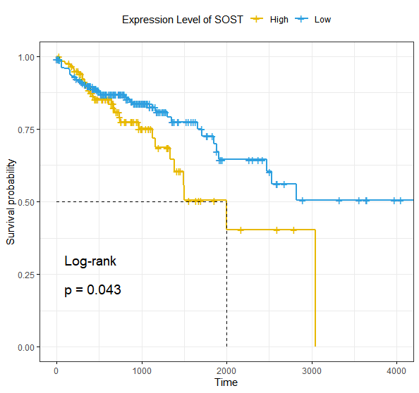

clinical.data <- read.csv('../Realdata/clinical.tsv', sep = '\t')
clinical.data.select <-
clinical.data[, c('case_submitter_id',
'vital_status',
'days_to_death',
'days_to_last_follow_up')]library('survival')
library('survminer')
fit <- survfit(Surv(time, status) ~ expression_level , data = clinical.data.select)
ggsurvplot(fit,
pval = TRUE,
pval.method = TRUE,
surv.median.line = "hv", # Specify median survival
ggtheme = theme_bw(), # Change ggplot2 theme
palette = c("#E7B800", "#2E9FDF") ,
legend.labs =
c("High", "Low"), # change legend labels.
legend.title = paste0('Expression Level of ',target.gene)
)结果如图：
